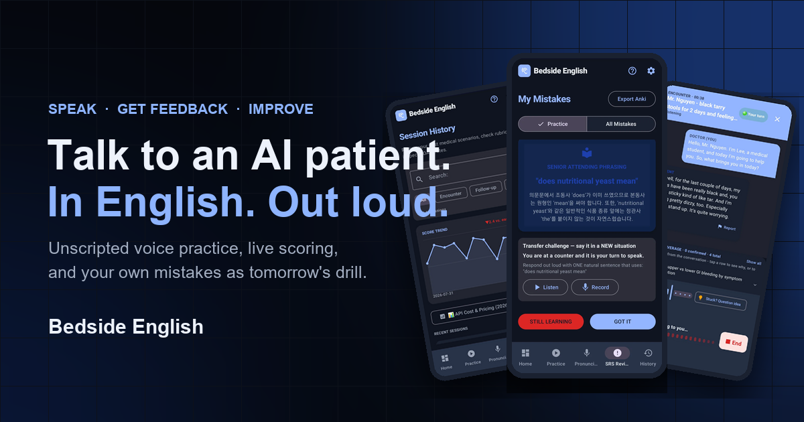

Geriatric review · Model follow-up
After a fall: a medication and safety follow-up
- Setting
- Primary care clinic
- Patient
- Mrs. Vance, 82, returns two weeks after a fall in her hallway.
- Read
- 4 min read
Before you walk in
The chart for today’s visit
Two-week review following a mechanical fall at home. This is what the doctor knows before the conversation starts.
Last visit
Evaluated 2 weeks ago following a fall in her hallway. X-rays negative for fracture. History of insomnia treated with zolpidem and allergy treated with diphenhydramine.
Current medicines
- Zolpidem 5 mg at bedtime
- Diphenhydramine 25 mg PRN allergy
- Amlodipine 5 mg once daily
- Hydrochlorothiazide 12.5 mg once daily
Previous plan
- Deprescribing sedating medications (taper zolpidem, stop diphenhydramine)
- Check orthostatic blood pressure
- Home safety evaluation / physical therapy balance assessment
- DEXA scan ordering
New results and observations
- Standing BP today: 118/70 mmHg (supine 136/82 mmHg - orthostatic drop)
- Physical therapy balance score: mild gait ataxia
- Vitamin D: 18 ng/mL (deficient)
Today’s tasks
- Evaluate fall recovery and gait stability
- Assess orthostatic hypotension and blood pressure medications
- Review medication deprescribing (tapering zolpidem, stopping anticholinergics)
- Discuss Vitamin D supplementation and DEXA bone density plan
- Review home safety modifications (rugs, lighting, grab bars)
Try it first
Say the doctor’s reply
Read the patient’s words, say your reply aloud, then reveal the model.
“Honestly, I'm terrified that if I fall again, I'll end up in a nursing home. I want to stay in my own home.”
Respond to her fear of losing her independence, and link it to the safety plan.
Reveal the model reply
That's completely understandable, and keeping you safe in your own home is our goal too. Everything we're doing today is aimed at that. The physical therapist found your balance is a little unsteady, so continuing balance therapy will help. And at home, removing loose rugs, adding good lighting, especially at night, and putting grab bars in the bathroom can make a big difference. Would you be willing to do those?
Model follow-up
Full transcript
- Doctor
Mrs. Vance, hello. I'm Dr. Lee. It's been two weeks since your fall in the hallway. How have you been doing?
- Patient
I haven't fallen again, thank goodness. I've been walking carefully with my cane.
- Doctor
I'm glad. What would you most like us to focus on today?
- Patient
My sleep. I want to know how I'm supposed to sleep without the zolpidem.
- Doctor
That's an important question, and we'll come to it. First, since the fall, have you had any head injury or hip pain?
- Patient
No, I didn't hit my head, and my hips are fine.
- Doctor
Good. Do you ever feel lightheaded or dizzy, especially when you stand up?
- Patient
Yes, a little, when I get up quickly from bed.
- Doctor
Have you ever blacked out, or felt your heart racing or pounding?
- Patient
No, I haven't blacked out, and my heart feels normal.
- Doctor
Thank you. That lightheadedness fits with something we measured today. Lying down, your blood pressure was 136 over 82. When you stood up, it dropped to 118 over 70. That's called orthostatic hypotension. Your blood pressure drops when you stand, which can make you dizzy and more likely to fall.
- Patient
So that's why I feel woozy getting out of bed?
- Doctor
Very likely, yes. Some of your medicines play a part in different ways. Sleeping pills and allergy pills like Benadryl can make you drowsy and unsteady. Your water pill, the hydrochlorothiazide, can make your blood pressure drop more when you stand. How has it gone with stopping the Benadryl and cutting down the zolpidem?
- Patient
I stopped the Benadryl like you said. I'm still taking half a zolpidem at night. I'm scared I won't sleep without it.
- Doctor
Thank you for being honest with me. Cutting it in half is a real step. Have you noticed any difference in the mornings?
- Patient
Yes. I feel less groggy in the morning.
- Doctor
That's a good sign. Sleeping pills like zolpidem can leave you drowsy and unsteady, especially if you get up at night, so the goal is to come off it completely, slowly, on a schedule we agree on. We'll replace it with things that help sleep without raising your fall risk: the same bedtime and wake-up time every day, a calm routine before bed, no caffeine after lunch, and not lying in bed awake for too long. If sleep is still hard, there's a type of therapy for insomnia called CBT-I that works well, often better than pills in the long run.
- Patient
I'll try. I don't want to be groggy and fall again.
- Doctor
About the water pill: because your blood pressure drops when you stand, I'd like to review whether we should lower the dose, change the timing, or switch it. We'll decide that together today rather than just stopping it. In the meantime, sit on the edge of the bed for a moment before you stand up.
- Patient
Sit first, then stand. I can do that.
- Doctor
Your vitamin D also came back low, at 18. Vitamin D helps keep your bones and muscles strong. I'd like to start a vitamin D supplement and arrange a bone density scan, called a DEXA scan, to see how strong your bones are. Does that sound okay?
- Patient
Yes, that's fine.
- Doctor
Can I ask what worries you most about all of this?
- Patient
Honestly, I'm terrified that if I fall again, I'll end up in a nursing home. I want to stay in my own home.
- Doctor
That's completely understandable, and keeping you safe in your own home is our goal too. Everything we're doing today is aimed at that. The physical therapist found your balance is a little unsteady, so continuing balance therapy will help. And at home, removing loose rugs, adding good lighting, especially at night, and putting grab bars in the bathroom can make a big difference. Would you be willing to do those?
- Patient
Yes. If it keeps me in my own home, I'll do it.
- Doctor
Wonderful. Let me make sure I've explained things clearly. Could you tell me the main things we've agreed today?
- Patient
Keep cutting down the sleeping pill slowly, work on my sleep routine, and sit on the bed before I stand up. Take vitamin D, have the bone scan, keep going to physical therapy, and fix the rugs, lights, and grab bars. And you'll look at my water pill.
- Doctor
Exactly right. If you do fall again, especially if you hit your head, can't get up, or pass out, get help right away and let us know. We'll see you again in a few weeks to check how the taper and the dizziness are going.
Flow at a glance
The route through the visit
- Check for new falls and set the agenda
- Screen for injury after the fall
- Connect dizziness on standing to today’s measurement
- Review each sedating and blood pressure medicine
- Plan the taper with non-drug sleep strategies
- Treat bone health and address the fear of losing independence
- Agree on home safety, teach-back, and safety-net
Reusable language
Phrases to take into your next follow-up
- “That lightheadedness fits with something we measured today.”
- Links the patient’s symptom to an objective finding.
- “Thank you for being honest with me. Cutting it in half is a real step.”
- Credits partial progress instead of highlighting what is left.
- “We’ll decide that together today rather than just stopping it.”
- Signals a safe, shared medication change.
- “Can I ask what worries you most about all of this?”
- Opens space for the concern behind the questions.
- “Keeping you safe in your own home is our goal too.”
- Aligns the safety plan with what the patient values.
Free · No card · No account
Practice this follow-up visit out loud
Run the visit in your own words, hear an AI patient respond, and use the feedback on your next attempt.

Editorial record
Tied to one reviewed case
This model uses a fictional Bedside English follow-up case as its source. The chart above is read directly from that case, and the page is checked against the same case and transcript fingerprints.
Editorial update: